Николай Коперник
Человек, который сдвинул Землю с трона.
Наводи камеру на QR-код, открывай страницу и узнавай, как открытия, идеи и смелость людей шаг за шагом приближали человечество к полёту в космос.
Человек, который сдвинул Землю с трона.
Мыслитель о бесконечной Вселенной.
Учёный, который посмотрел в телескоп — и не смог развидеть.
Русский учёный, открывший атмосферу Венеры.
Открытие новой планеты и расчёт ещё одной почти по математике.
Открыли девятую планету — а потом начали спорить, планета ли это вообще.
Теоретик космонавтики ещё до эры ракет.
Главный конструктор космической эпохи СССР.
Сигнал, который услышал весь мир.
Лайка, Белка и Стрелка: трагедия, риск и первый счастливый триумф.
Первые звёздные лица советской космонавтики.
«Аполлон-11» и одна из главных дат XX века.
Аппараты, которые добрались до самой суровой планеты.
Космос как территория сотрудничества.
Первый известный межзвёздный гость.
Первую межзвёздную комету открыл астроном-любитель.
Новый виток лунной программы США.
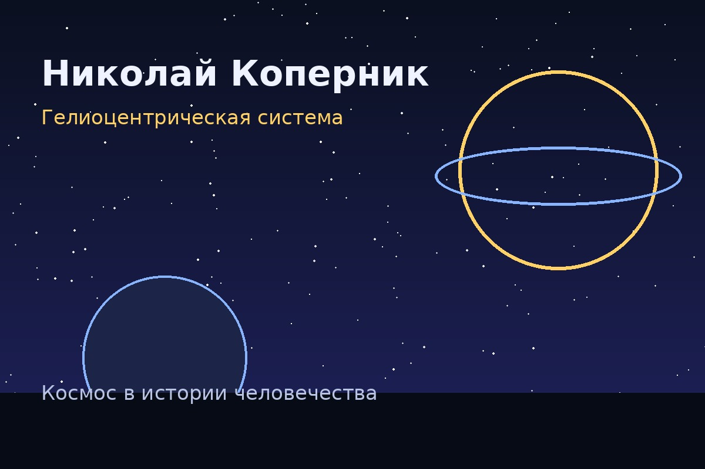
Для своего времени это было почти интеллектуальное землетрясение. Средневековая картина мира ставила Землю в центр Вселенной, а Коперник аккуратно, но очень уверенно показал: центр — вовсе не там, где человеку удобно.
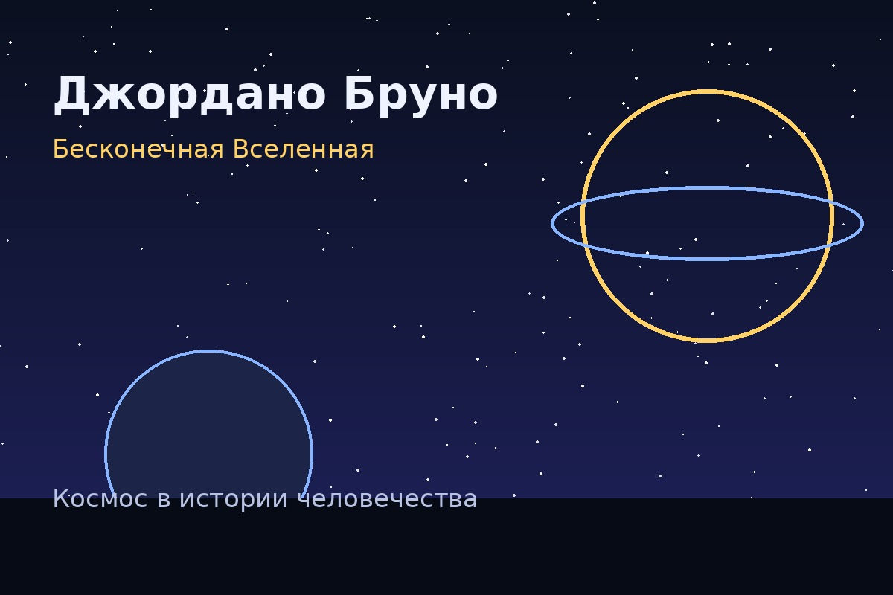
Для эпохи, когда многие ещё привыкали к мысли, что Земля — не центр мира, это звучало как космический уровень дерзости. Бруно был не астрономом в строгом смысле, а философом, но его идеи расширили представление человека о масштабе Вселенной.
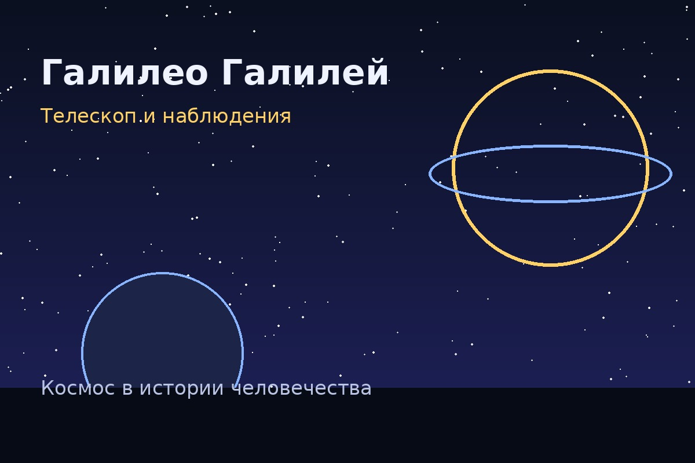
Он увидел горы на Луне, фазы Венеры, спутники Юпитера и пятна на Солнце. Всё это доказывало: небесный мир вовсе не идеален и неподвижен, как считалось раньше.
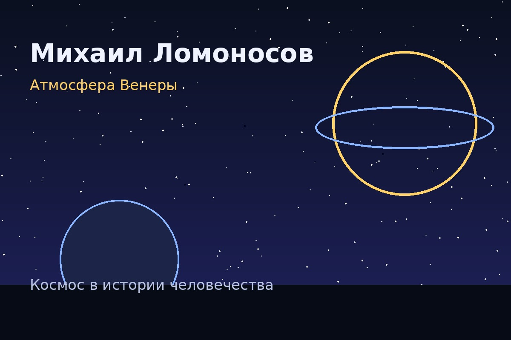
Это было огромное достижение русской науки. Ломоносов показал, что небесные тела можно изучать как реальные физические объекты, а не просто как светящиеся точки на небе.
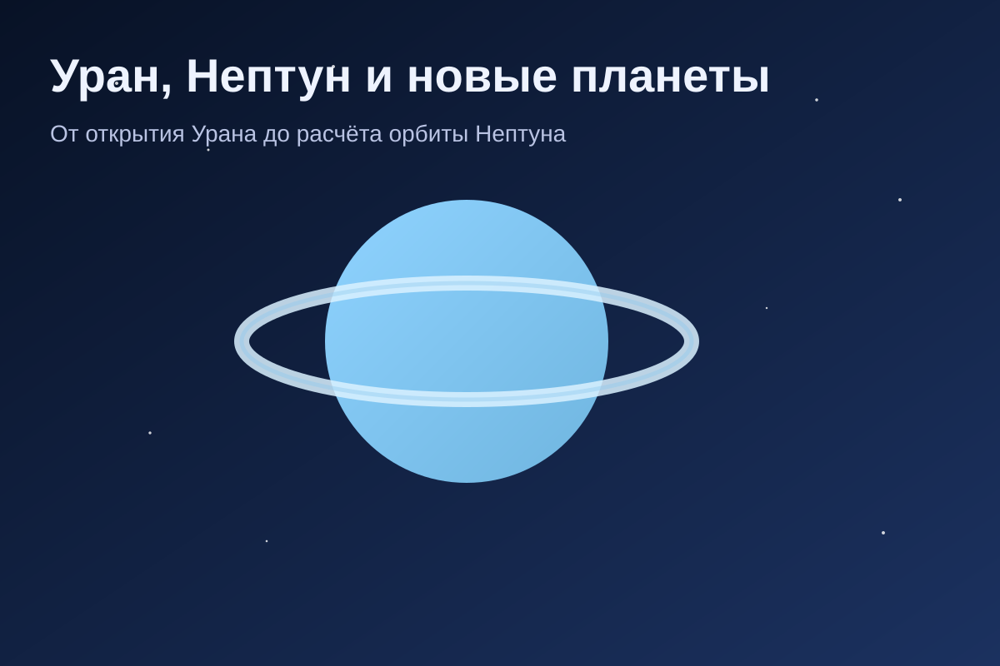
В 1781 году Уильям Гершель открыл Уран — первую планету, найденную в новое время с помощью телескопа. А в XIX веке астрономы заметили, что Уран движется не совсем так, как должен. Француз Урбен Леверье и англичанин Джон Кауч Адамс независимо рассчитали возможное положение неизвестной планеты, и в 1846 году Нептун действительно был обнаружен почти «по формулам».
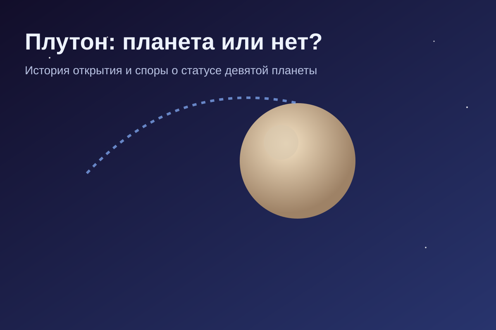
Плутон обнаружил Клайд Томбо в обсерватории Лоуэлла. Долгое время он считался полноценной девятой планетой Солнечной системы. Но по мере изучения выяснилось, что Плутон меньше, чем думали, и похож на другие объекты пояса Койпера. В 2006 году Международный астрономический союз ввёл новое определение планеты, и Плутон перевели в категорию карликовых планет.
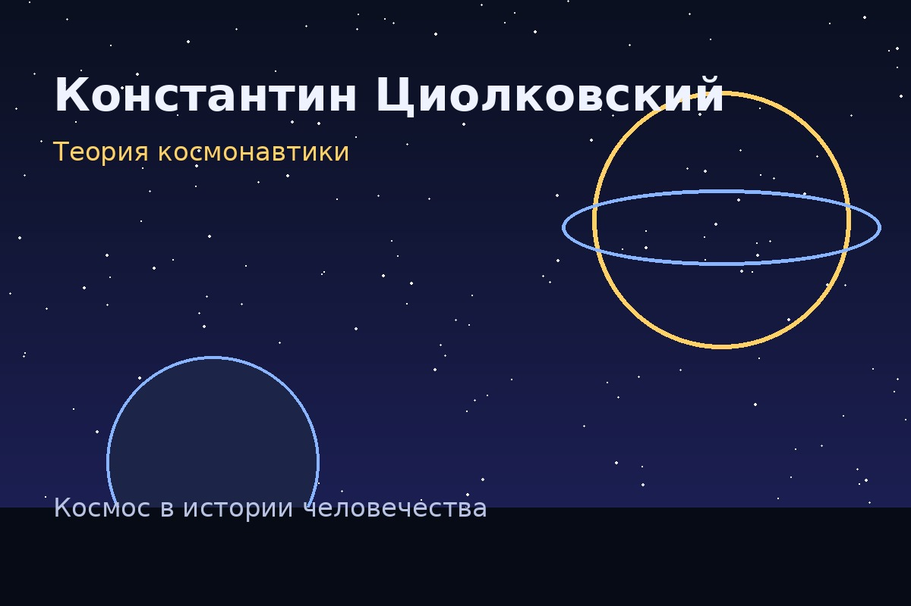
Когда полёты в космос казались фантастикой, он уже писал о многоступенчатых ракетах, орбитальных станциях и будущем человечества за пределами Земли. Иногда история науки выглядит как спойлер к будущему — это тот случай.
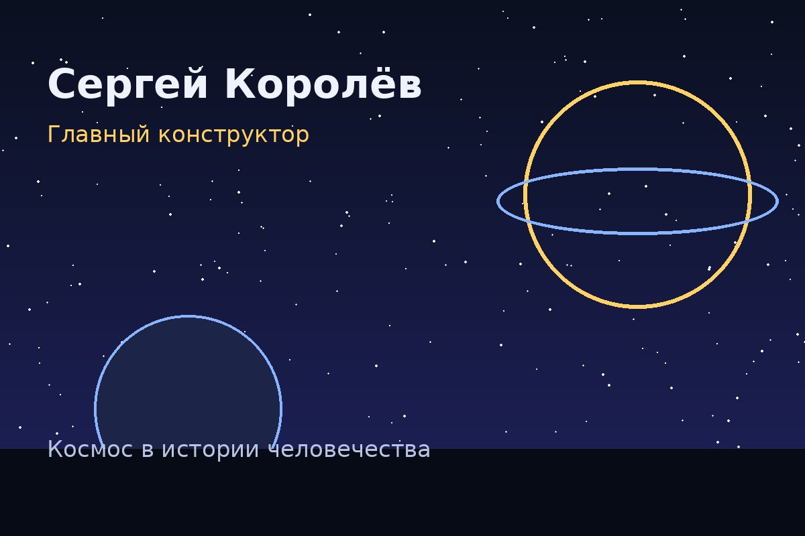
Именно под его руководством был запущен первый искусственный спутник Земли, а затем отправлен в космос Юрий Гагарин. Долгое время имя Королёва держалось в секрете: его называли просто «Главный конструктор».
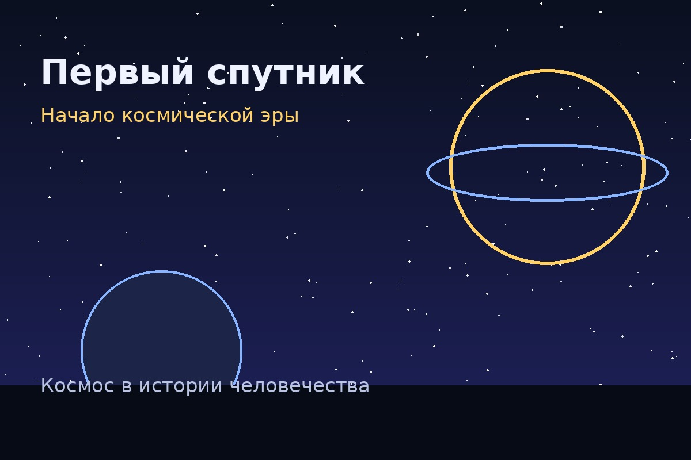
Небольшой металлический шар с антеннами облетал Землю и передавал знаменитые радиосигналы. Для мира это стало шоком и восхищением одновременно: космос оказался не далёкой мечтой, а уже реальностью.
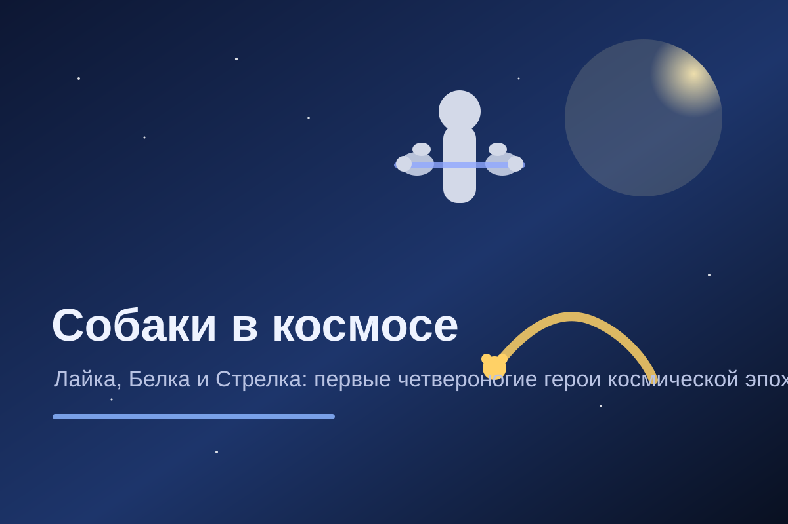
В ноябре 1957 года собака Лайка стала первым живым существом, выведенным на орбиту Земли. Возврат аппарата тогда ещё не был предусмотрен, и полёт закончился гибелью животного. Этот запуск показал, что живой организм может пережить старт и невесомость, но напомнил и о высокой цене ранних космических экспериментов.
В августе 1960 года Белка и Стрелка совершили орбитальный полёт на корабле «Спутник-5» и благополучно вернулись на Землю. Именно их миссия стала важнейшим доказательством того, что живое существо может не только побывать в космосе, но и вернуться обратно — а значит, следующий шаг уже мог сделать человек.
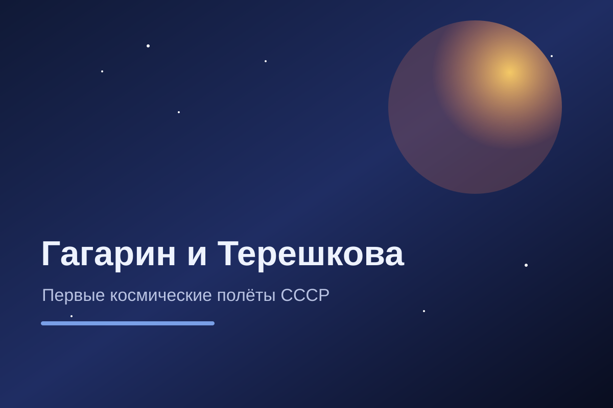
Полёт Гагарина 12 апреля 1961 года доказал, что человек может выйти за пределы Земли и вернуться живым. А уже 16 июня 1963 года Валентина Терешкова на корабле «Восток-6» стала первой женщиной-космонавтом. Для СССР это были не просто победы в космической гонке, а мощный символ научного и политического престижа.
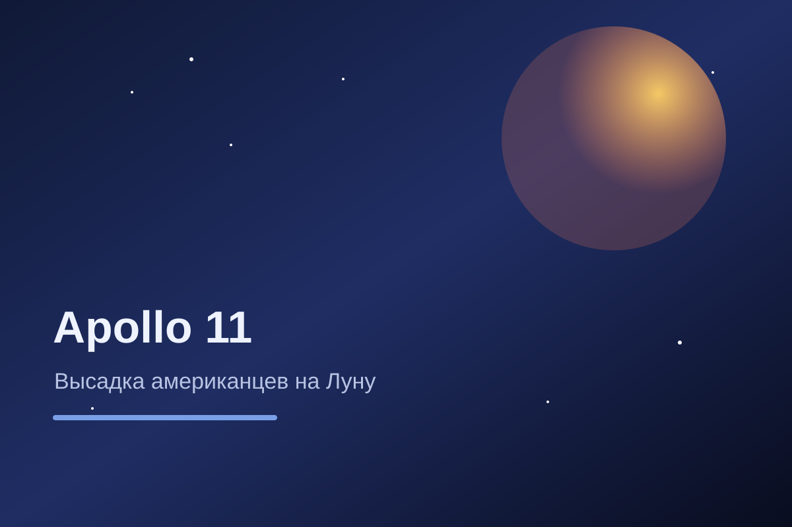
Нил Армстронг и Базз Олдрин спустились на Луну, а Майкл Коллинз оставался на орбите. Это событие стало кульминацией космической гонки США и СССР и показало, на что способна наука, если государство вкладывает в неё колоссальные ресурсы.
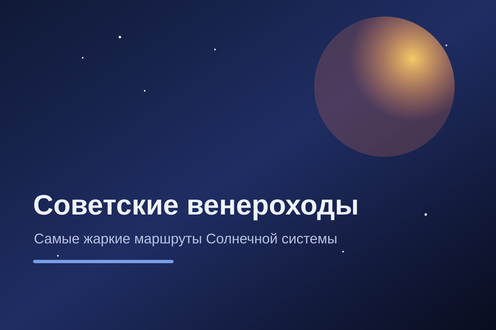
В школьной речи такие аппараты иногда называют «венероходами», но исторически точнее говорить о серии советских межпланетных станций «Венера». Они изучали атмосферу, давление, температуру и рельеф планеты. Это была инженерная задача почти уровня «отправим прибор в духовку и попросим не сгореть».
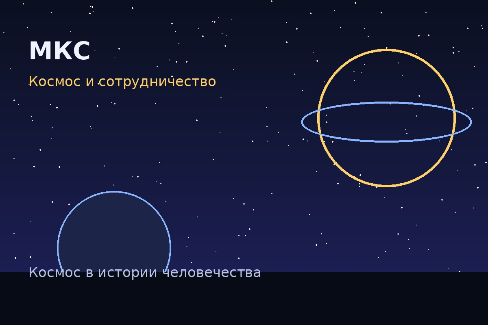
В создании и работе станции участвуют разные страны. На борту проводятся научные эксперименты, проверяются технологии для будущих дальних полётов и изучается влияние космоса на человека.
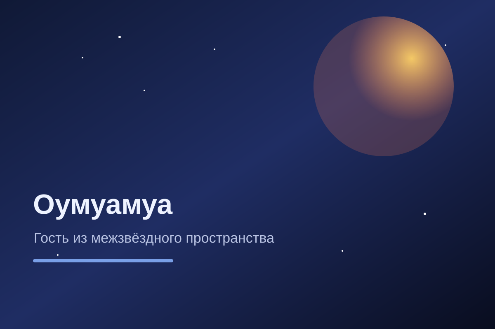
Его заметили в 2017 году. Учёные быстро поняли: орбита объекта показывает, что он не связан гравитационно с Солнцем и лишь пролетает мимо. Название происходит из гавайского языка и примерно означает «разведчик» или «посланник, прибывший первым издалека».
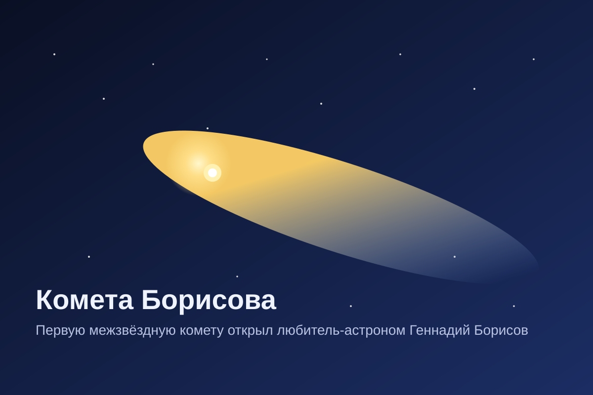
Объект получил обозначение 2I/Borisov. Буква I означает interstellar — «межзвёздный». Если Оумуамуа стал первым известным межзвёздным объектом вообще, то комета Борисова стала первым таким объектом кометной природы. И особенно приятно, что её открыл не гигантский космический центр, а наблюдатель-энтузиаст с собственной техникой.
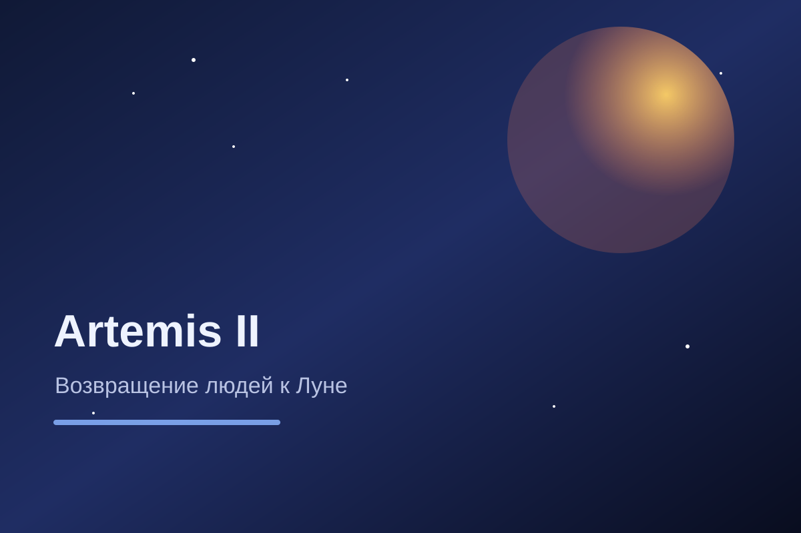
Если программа «Аполлон» символизировала победу в космической гонке XX века, то Artemis показывает уже другую эпоху: международное сотрудничество, новые технологии и подготовку к более дальним экспедициям. Миссия должна проверить корабль Orion и ракету SLS в полёте с экипажем вокруг Луны.